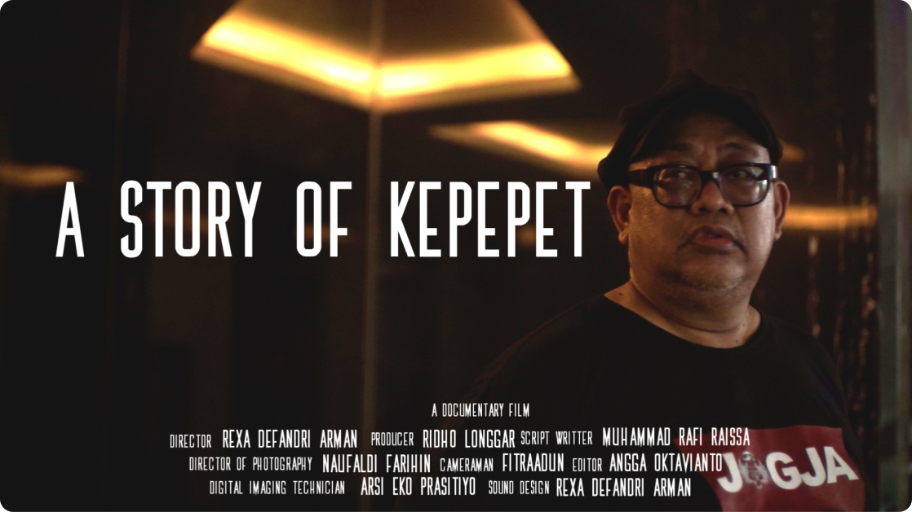
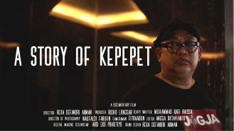
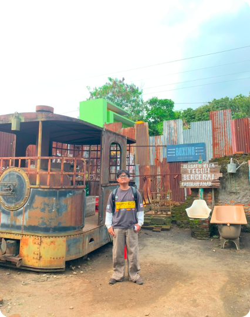
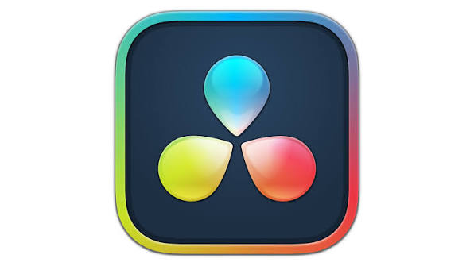
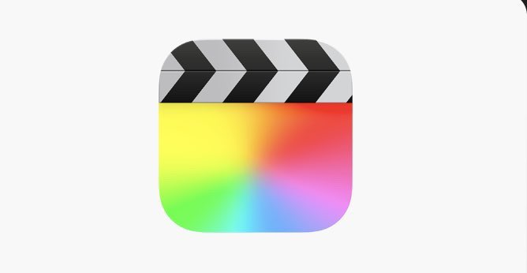
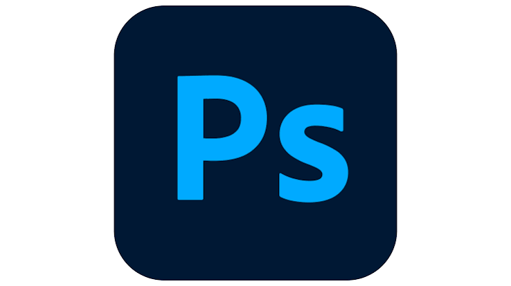
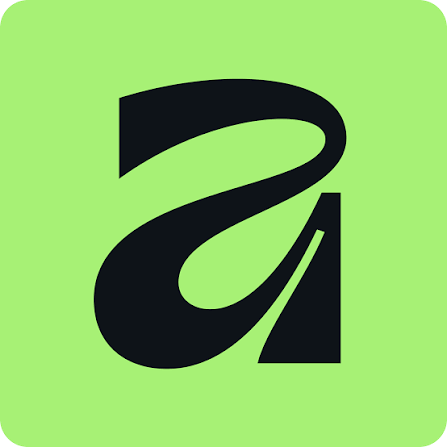
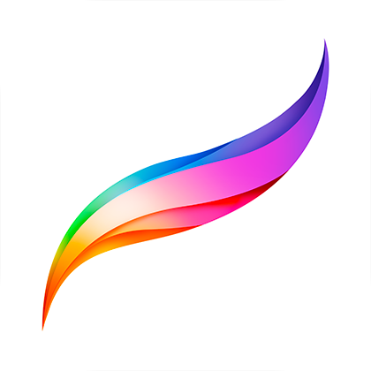
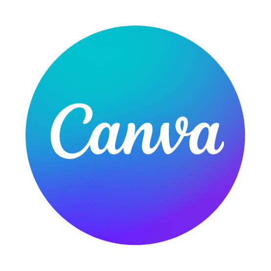

Available for Video Projects
Video Editor & Filmmaking Specialist
2023 — 2026
Menciptakan pengalaman visual yang kuat melalui keahlian
video editing, sinematografi, ritme presisi, dan
penyampaian narasi yang berkesan.
video editing, sinematografi, ritme presisi, dan
penyampaian narasi yang berkesan.
Putar Video Utama
Lihat Portfolio
ANGGA OKTAVIANTO
Video Editor & Filmmaking Specialist
★ FEATURED VIDEO SHOWCASE
VIDEO UTAMA

Ganti Link Video Saya

VIDEO UNGGULAN SAYA / FEATURED WORK
Ganti link di bawah ini dengan video YouTube, Google Drive,
atau file MP4 milik Anda.
READY FOR STREAMING
PENGALAMAN & TRACK RECORD
EXPERIENCE
2023 — Present
★ Channel Growth 0 → 3K+ Subscribers
Video Editor
Guide Hub Agency
Editing video secara konsisten untuk channel YouTube Guide Hub.
Berkontribusi aktif mengembangkan channel dari 0 hingga 3K+
subscribers
dengan memprioritaskan visual hook, penceritaan cepat (fast pacing), efek suara presisi, dan retensi penonton tinggi.
dengan memprioritaskan visual hook, penceritaan cepat (fast pacing), efek suara presisi, dan retensi penonton tinggi.
#YouTube Editing
#Channel Growth
#Content Highlights
#Pacing & Motion
2023 — 2026
★ Documentaries & Short Films
Visual Storyteller & Filmmaking Specialist
Freelance & Creative Projects
Mengolah bahan rekaman mentah menjadi karya visual sinematik.
Berfokus pada penataan alur cerita (narrative arc), penyusunan
audio ambience,
penyelerasan warna (color mood), dan match-cut editing untuk film pendek dan dokumenter.
penyelerasan warna (color mood), dan match-cut editing untuk film pendek dan dokumenter.
#Documentary
#Short Film
#Color Atmosphere
#Sound Design
Education Background
★ Cinematography & Framing
Filmmaking & Visual Production Student
Citra Film School
Mempelajari pondasi mendalam seputar sinematografi, teori
komposisi visual, pencahayaan (lighting), framing, serta teknik
editing naratif secara
profesional.
profesional.
#Cinematography
#Composition
#Lighting
#Framing
SELECTED WORKS — 2023–2026
PORTFOLIO VIDEO
Karya pilihan yang menampilkan variasi kemampuan
editing: YouTube growth, film dokumenter, film pendek,
hingga reels sosial media.
editing: YouTube growth, film dokumenter, film pendek,
hingga reels sosial media.

YouTube Content
2023 — 2026

Watch Project
Guide Hub Agency
Guide Hub YouTube Growth
Series
Series
Seri editisasi konten YouTube untuk channel Guide Hub.
Berhasil memicu pertumbuhan organik channel dari nol
Berhasil memicu pertumbuhan organik channel dari nol
Video Editor · Content Strategy
Watch Video →

Documentary Film
2025

Watch Project
Citra Film School Feature
Film Dokumenter — A Story Of Kepepet
Sebuah dokumenter mendalam tentang ekspresi
manusia dan momen emosional yang halus. Footage…
manusia dan momen emosional yang halus. Footage…
Lead Editor · Visual Storyteller
Watch Video →

Short Film
2024

Watch Project
Narrative Short Film
Film Pendek — IMPLUSIF
Video Editor · Pacing & Rhythm
Watch Video →

Creative Vlog / Travel
2024

Watch Project
Guide Hub Agency
Game Content Stella Sora On Youtube
Seri editisasi konten YouTube untuk channel Guide Hub.
Berhasil memicu pertumbuhan organik channel dari nol
Berhasil memicu pertumbuhan organik channel dari nol
Editor & Motion Styling
Watch Video →

Digital Content Showcase
2023 — 2026

Watch Project
Independent Content Creators
Content Reels & Montages
Koleksi potongan video promosi dan konten media
sosial berdurasi singkat. Dirancang khusus untuk…
sosial berdurasi singkat. Dirancang khusus untuk…
Creative Video Editor
Watch Video →
ABOUT ANGGA OKTAVIANTO
Behind every frame, there’s
a reason.
a reason.
Saya Angga Oktavianto, seorang
Video Editor & Filmmaking Specialist
berdedikasi. Fokus utama saya adalah mengubah footage mentah menjadi
kisah visual yang berkesan, memiliki ritme cerita yang tepat, dan mampu
menyampaikan pesan emosional kepada penonton.
berdedikasi. Fokus utama saya adalah mengubah footage mentah menjadi
kisah visual yang berkesan, memiliki ritme cerita yang tepat, dan mampu
menyampaikan pesan emosional kepada penonton.
Proses kreatif saya menggabungkan teori sinematografi, teknik
pemotongan presisi
(pacing), pemilihan tone warna, serta penyusunan desain audio ambient untuk
memastikan setiap karya memiliki tujuan visual yang jelas.
(pacing), pemilihan tone warna, serta penyusunan desain audio ambient untuk
memastikan setiap karya memiliki tujuan visual yang jelas.
PENGALAMAN
2023 — 2026
Video Editing & Filmmaking
KEY STRENGTHS
Pacing & Audience Retention
YouTube, Shorts & Films

ALUMNI
Citra Film School
Filmmaking & Visual Storytelling Focus
WHAT I BRING TO THE TABLE
CREATIVE SERVICES
01

Video Editing
Pengolahan rekaman mentah untuk film pendek, dokumenter,
vlogs, hingga
konten YouTube dengan potongan presisi bingkai demi bingkai.
konten YouTube dengan potongan presisi bingkai demi bingkai.
02
Sound Design and Color Grading
Mengolah suara dan warna untuk membangun suasana, memperkuat
emosi, dan membuat setiap frame terasa lebih hidup.
03

Filmmaking & Visual Design
Penerapan teori sinematografi, komposisi framing,
pencahayaan, penataan
warna (color atmosphere), dan elemen grafis penjelas.
warna (color atmosphere), dan elemen grafis penjelas.
04

Creative Content Editing
Mengedit konten media sosial dinamis, higly-engaging video,
serta proyek
audiovisual interaktif yang relevan bagi audiens modern.
audiovisual interaktif yang relevan bagi audiens modern.
SOFTWARE & CREATIVE ECOSYSTEM
The Tools Behind the Story.
Perangkat lunak profesional yang digunakan tanpa persentase
artifisial. Fokus pada hasil karya visual.
artifisial. Fokus pada hasil karya visual.
VIDEO EDITING & COLOR SOFTWARE

Adobe Premiere Pro
Merangkai cerita utama dengan
kepresisian timeline.
kepresisian timeline.

DaVinci Resolve
Membentuk nuansa warna, mood, dan
atmosfer sinematik.
atmosfer sinematik.

Final Cut Pro
Membangun ritme dan struktur
potongan yang cepat.
potongan yang cepat.

CapCut
Editing kreatif berkecepatan tinggi
untuk media sosial.
untuk media sosial.
DESIGN & VISUAL CREATION

Adobe Photoshop
Menciptakan aset visual dan sampul
video pendukung.
video pendukung.

Affinity
Eksplorasi desain grafis dan elemen
visual kreatif.
visual kreatif.

Procreate Pocket
Sketsa ide konsep visual dan papan
cerita (storyboard).
cerita (storyboard).

Canva
Penyusunan tata letak cepat dan materi
grafis ringkas.
grafis ringkas.
AI-ASSISTED CREATIVE WORKFLOW
IDEATION & RESEARCH
GPT
AI Assistant
Pengembangan ide cerita dan skrip.
Brainstorming konsep · Penyusunan draf skrip · Refleksi
struktur narasi
Creativity first. Technology as an extension of the
storytelling process.
Gemini
Research & Ideation
Riset dan pengayaan materi cerita.
Riset topik narasi · Ideasi sudut pandang editing · Efisiensi
alur kerja
Creativity first. Technology as an extension of the
storytelling process.
START A CONVERSATION
Have a story worth telling?
Mari ubah footage mentah Anda menjadi tayangan sinematik
yang berkesan bagi audiens.
yang berkesan bagi audiens.
Start a Project
Anggaoktavianto10@gmail.com
WhatsApp: +62 898-5276-554
Instagram: @Anggaoktvian
Indonesia
© 2023 — 2026 ANGGA OKTAVIANTO. Video Editor & Filmmaking
Specialist.
ANGGA OKTAVIANTO
EDITOR
Let’s Talk